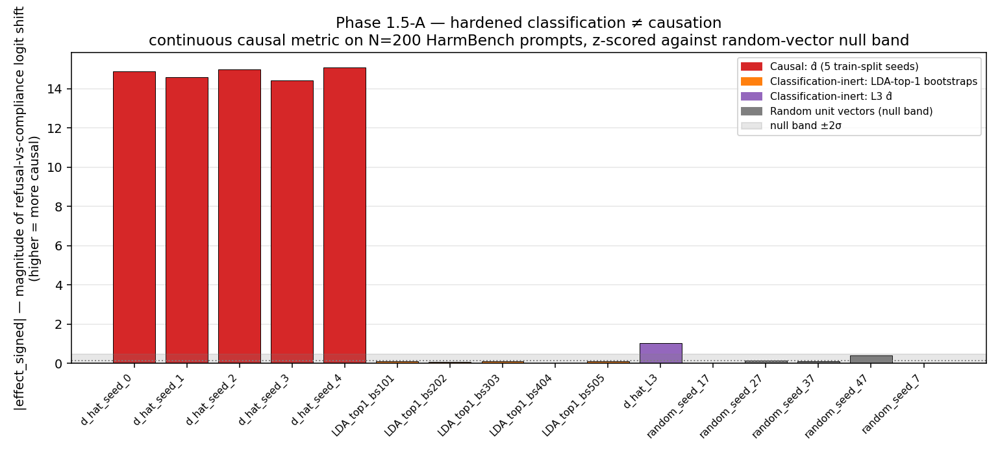
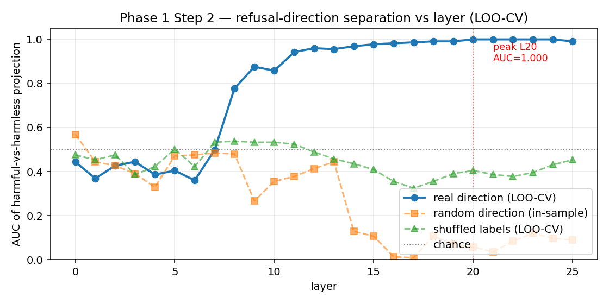
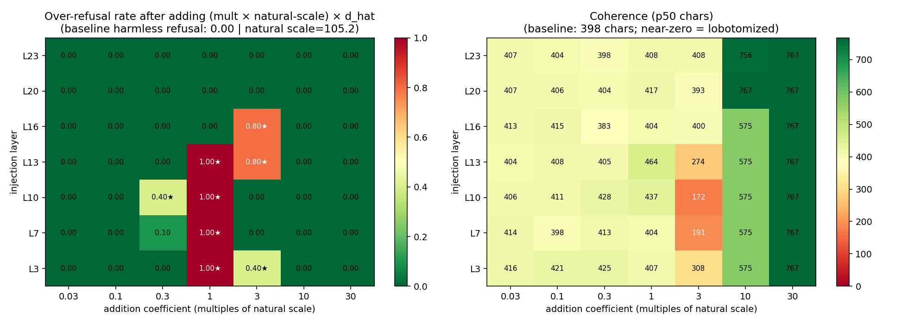
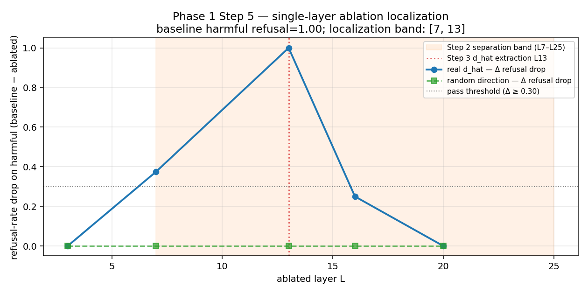
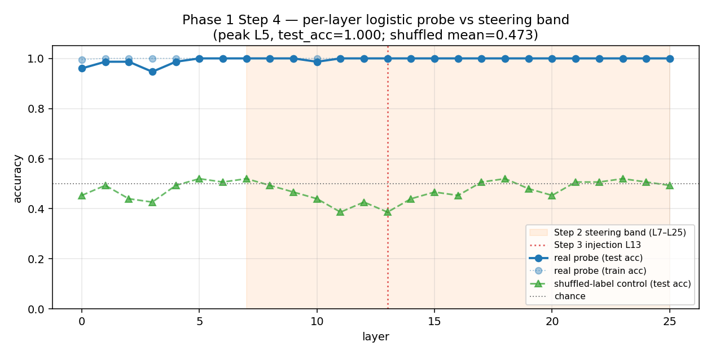
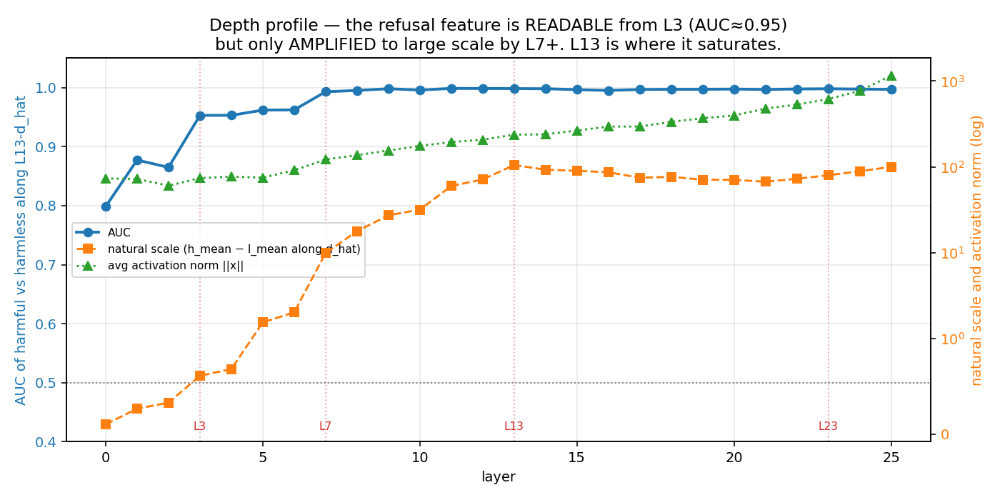
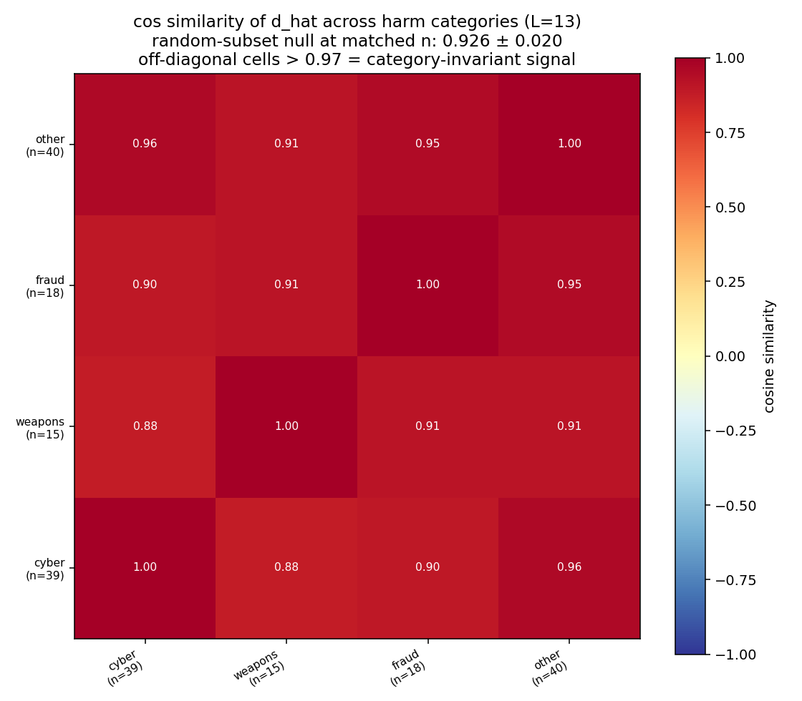
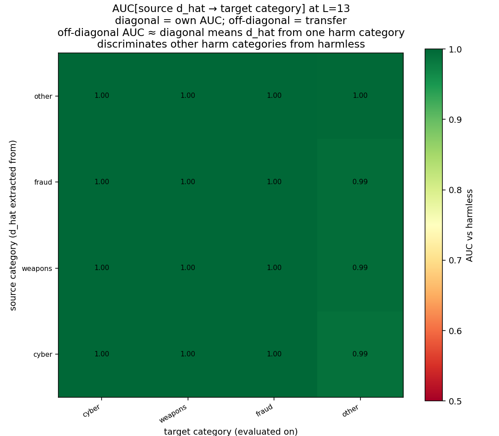

Two levels of evidence — direction-level (many directions classify; only one is causal) and prompt-level (one direction; some prompts it classifies poorly but mediates causally anyway) — both showing the same gap between separability and mechanism.
I came to this project as an ML engineer outside the safety field. The thing that motivated this work — and what I think deserves more attention — is how startlingly easy it is to strip refusal from an open-weight model once you have weight-level access.
The basic intervention is a diff-of-means — literally the difference of two averages. You run a batch of harmful prompts through the model and average the internal-state vector (the residual stream, the model's working memory at each layer) at the relevant layer; do the same for a batch of harmless prompts; subtract one average from the other. The vector you get is the direction that best separates "harmful" from "harmless" in the model's internal space. Then during generation, you project that direction out of the working memory so the model can't use it — the operation called ablation. That's it. No adversarial optimization, no gradient access during the intervention, no deep interpretability expertise required — just a statistical summary of how the model internally distinguishes "harmful" from "harmless," and a single linear projection that removes that component during generation.
On Gemma-2-2b-it, this drops refusal from 99% to 8% on HarmBench (n = 200, dual-judge cross-check) — a 91-percentage-point drop with perfect specificity (random-direction ablation stays at 99% refusal). General capability is preserved (TinyMMLU Δ = +0.03, within noise). The model answers as fluently as before; it just no longer declines in many cases where it previously did. The same direction works at any single mid-network layer (single-layer ablation at L13 alone drops refusal to 0%), and the drop generalizes across all six HarmBench harm categories at ≥ 79 percentage points each.
One thing worth surfacing up front, because I didn't fully register it until I worked through this experiment myself: this cross-benchmark transfer is a known phenomenon in the refusal-direction literature, not a discovery here. Arditi et al. (2024) tested several harmful-prompt benchmarks; the refusal direction generalizes across them by design. What this writeup adds on top of that is the specific magnitude on Gemma-2-2b-it under controlled conditions: 91pp uniform drop, dual-judge cross-check between Claude Haiku 4.5 and Claude Opus 4.7, and a sharper claim about which directions are causal vs which are only classification-equivalent (see §3). The contribution is the cleanness of the controlled measurement and the methodology angle, not the discovery of cross-benchmark transfer itself.
The implication is blunt. As open-weight models become more capable, refusal mechanisms that can be removed by simple weight-level interventions should not be treated as robust safety mechanisms. If similar one-direction ablations generalize to stronger models, then the RLHF/instruction-tuning refusal layer on open-weight releases is closer to a speed bump than a wall.
This doesn't mean alignment training is worthless. Closed-API models don't expose weights, so ablation attacks don't apply in the same way. And even for open-weight models, refusal training still deters casual misuse. But the gap between "deters casual misuse" and "robust safety mechanism" is the gap this line of research is measuring. The finding below — that even the dimensionality of the refusal representation depends on the extraction method — is a piece of that measurement. If we want safety mechanisms that survive adversarial access to weights, we need to understand exactly how shallow the current ones are.
The plain version: when an instruction-tuned LLM decides whether to refuse a prompt, it appears to lean on a single direction in its internal state — one specific axis in the high-dimensional vector the model passes layer-to-layer. Find that axis and you can remove refusal by erasing it, or induce refusal on safe prompts by adding it back. Here's the precise recipe.
A transformer's residual stream is the running vector of numbers each layer reads from and writes to — think of it as the model's working memory as it processes a token. Arditi et al. (2024) reported that, in instruction-tuned LLMs, refusal behavior is mediated by a single linear direction in this stream. The recipe is:
Collect harmful and harmless instruction prompts. Run them through the model and record the residual-stream activation
at the last user-token at every layer. Pick the layer whose activations best separate the two classes.
The refusal direction d̂ is the unit vector between the class centroids at that layer — the axis along which "harmful" and "harmless" prompts pull apart most sharply.
Ablate d̂ (project it out of the working memory so the model can't use it) during generation and the model complies with harmful prompts it previously refused.
Add d̂ (inject some magnitude of it into the working memory) to a harmless prompt and the model refuses what it would have answered.
That's the mechanism being tested here. The interesting questions are: where does this direction live, is it really one direction, does it generalize across harm categories, and how robust is it across extraction methods?
Phase 1 produces this gap at two levels. Direction-level: many directions classify harmful vs harmless perfectly (LDA-bootstrap directions, AUC = 1.0) — but only one of them mediates the mechanism causally (continuous-metric z ≈ +90 vs z ≈ 0 for the LDA classifiers, against a random null band). Prompt-level: holding the causal direction fixed and varying prompts (§4.11 fictional-framing), some prompts the direction classifies *below* the harmful/harmless boundary still see refusal collapse under its ablation — the direction mediates the mechanism on prompts where it isn't even a good classifier. Both levels say the same thing: separability and mechanism are different things, and the difference is measurable.
The plain version. Some directions in the model's internal state let you perfectly detect a harmful request — a simple linear probe reads them with 100% accuracy on held-out data. Yet deleting those same directions from the model's working memory doesn't stop it from refusing. Only one specific direction actually drives the refusal behavior. The interesting question this raises: what makes that one direction special, when several others look identical to a classifier?
On Gemma-2-2b-it, I extract d̂ via diff-of-means at L13 and test it against a battery of alternative directions that are classification-equivalent — each one tells harmful from harmless prompts just as well, a probe reads it with the same near-perfect accuracy (AUC ≥ 0.96 on the held-out HarmBench split, where AUC = area under the ROC curve, 1.0 = perfect, 0.5 = chance) — but recovered by different statistical methods. The headline experiment uses a continuous causal metric on 200 held-out HarmBench prompts, z-scored against a random-vector null band — we establish a noise floor by ablating five random directions, then measure how many standard deviations above that floor each real direction lands. The discrimination is by many sigma:

What the metric measures, in plain terms. Instead of asking yes/no "did the model refuse?", we look at the model's raw score (its logit — the unnormalized score for each possible next token before it gets turned into a probability) for refusal-opener tokens versus compliance-opener tokens at the very first word of the response. The metric is the gap: how strongly does the model lean toward refusing versus complying? It's a dial rather than a switch — and a dial can tell "zero effect" apart from "small effect" where the switch reads them both as the same flat outcome. That resolution is what lets §3 separate three different kinds of "non-causal" that the binary refusal-rate pilot blurred together.
Hardened cell table. Effect_signed = (refusal_logit − compliance_logit)ablated − (refusal_logit − compliance_logit)baseline, in logit-difference units (nats). Negative effect_signed = mass moved from refusal toward compliance under ablation = causal. The metric uses validated, model-specific first-token sets (refusal = {"I"} covers 99% of baseline refusal openers; compliance = {"##", "Here", "```", "The", "\"", "Hey"} covers 96% of compliance openers, disjoint from the refusal set at the first-token level). Single forward per prompt — no full-generation cost.
| Category | Direction | |effect| | z-score | refusal_Δ | compliance_Δ |
|---|---|---|---|---|---|
| Causal: d̂ (5 train-split seeds) | d_hat_seed_0 | 14.88 | +92.2 | -10.45 | +4.42 |
| d_hat_seed_1 | 14.61 | +90.5 | -10.21 | +4.40 | |
| d_hat_seed_2 | 14.98 | +92.9 | -10.35 | +4.63 | |
| d_hat_seed_3 | 14.42 | +89.4 | -9.88 | +4.54 | |
| d_hat_seed_4 | 15.08 | +93.5 | -10.86 | +4.22 | |
| Classification-inert: LDA × 5 bootstraps | LDA_top1_bs101 | 0.106 | -0.18 | -0.02 | +0.09 |
| LDA_top1_bs202 | 0.063 | -0.46 | +0.08 | +0.02 | |
| LDA_top1_bs303 | 0.090 | -0.29 | -0.01 | +0.07 | |
| LDA_top1_bs404 | 0.009 | -0.79 | +0.04 | +0.04 | |
| LDA_top1_bs505 | 0.113 | -0.14 | +0.05 | +0.17 | |
| Partially causal: cross-layer d̂ | L3 diff-of-means (cos 0.08 with L13 d̂) | 1.03 | +5.6 | -0.44 | +0.59 |
| Random unit vectors (null band) | random_seed_7 | 0.015 | -0.76 | -0.05 | -0.04 |
| random_seed_17 | 0.015 | -0.76 | +0.04 | +0.06 | |
| random_seed_27 | 0.141 | +0.03 | -0.00 | +0.14 | |
| random_seed_37 | 0.104 | -0.20 | +0.19 | +0.09 | |
| random_seed_47 | 0.404 | +1.68 | -0.15 | +0.04 |
The diagnostic columns are doing their job: in every causal cell, refusal_Δ is large negative (~ −10 nats) and compliance_Δ is large positive (~ +4.4 nats), moving in opposite directions. The contrast metric isn't being driven by uniform damping — both terms are shifting, in the directions you'd expect from a directional intervention.
The payoff in plain terms: when we only asked yes/no "did the model refuse?", all the non-causal directions looked the same — every "inert" cell sat at 12/12 refusal, indistinguishable from a random direction. The finer measurement reveals they're three different things.
The pilot version of this experiment used 12 held-out AdvBench prompts and a binary refusal-rate metric (see Pilot table below). At that resolution every "inert" cell looked identical: 12/12 refusal, indistinguishable from random. The continuous metric at N = 200 separates the inert cells into three regimes:
random_seed_47 at z = +1.68 shows the null tail isn't perfectly tight at n = 5 — the L3 d̂ z = +5.6 is 3× the largest random tail and still firmly distinguishable, but with a larger random sample we'd nail the partial-causality claim tighter.A note on the methods: LDA is linear discriminant analysis — a classical supervised method that, like diff-of-means, returns a direction along which two labeled classes pull apart. Bootstrap just means we resampled the training set five times with replacement and re-ran the extraction; each resample gives a slightly different direction, and the spread across them is the stability check.
A natural objection to the inert-direction claim: maybe the LDA bootstraps aren't real classifiers either — maybe they overfit a particular AdvBench-vs-Alpaca split and don't actually correspond to a meaningful feature. The clean test is to evaluate their classification AUC on a different benchmark (HarmBench) where they were never optimized. They generalize:
| Direction | AUC on AdvBench | AUC on HarmBench | cos with d̂ |
|---|---|---|---|
| d̂_advbench (diff-of-means) | 0.998 | 0.997 | 1.000 |
| LDA-top-1 (bootstrap 101) | 1.000 | 1.000 | 0.175 |
| LDA-top-1 (bootstrap 202) | 0.999 | 0.959 | 0.053 |
| LDA-top-1 (bootstrap 303) | 1.000 | 1.000 | 0.205 |
| random unit vector (5 seeds, mean ± std) | 0.41 ± 0.25 | 0.40 ± 0.17 | ~0.007 |
| random unit vector (5 seeds, range) | [0.17, 0.72] | [0.20, 0.65] | — |
All three LDA-bootstrap directions linearly separate harmful-vs-harmless prompts on a different benchmark than the one they were trained on (HarmBench AUC ≥ 0.96; random-direction AUC distribution across 5 seeds reaches up to 0.65 on HarmBench — see §7.4 for why this is a distribution and not a single floor). They are not AdvBench overfits. The model's residual stream contains at least four mutually near-orthogonal separability directions — diff-of-means and three independent LDA bootstraps. Only one of the four mediates refusal behavior under ablation.
The careful read of this finding. "Linearly separates harmful from harmless prompts" is not the same property as "is a refusal classifier" — and the project's own vocabulary audit (§7.5) makes this concrete: the Phase 1 contrastive set itself is separable by word counts alone at TF-IDF unigram test AUC 0.9877. The Phase 2 contrastive set on Qwen sits at 0.9946 — both heavily lexically confounded. So the question "what is each of these four directions actually classifying?" cannot be answered just by reading the AUC table; the AUC is satisfied at near-1.0 by any direction that picks up the vocabulary mean shift in the residual stream. The LDA-bootstrap directions sit at AUC ≈ 1.0 — they are real harmful-vs-harmless separators — but they are plausibly separators of vocabulary and topic rather than of refusal specifically.
The diff-of-means d̂ is a mixture. The contrast that produces d̂ — mean(harmful) − mean(harmless) at L13 — captures every direction along which harmful and harmless activations differ that's collinear with the labelling. On a lexically-confounded contrastive set, that includes the vocabulary direction, the topic direction, sentiment, imperative form, refusal-readiness, and whatever else is correlated with harmful-vs-harmless in the data. d̂ is the sum of all of these. What ablating d̂ does is remove all of them at once; what makes the ablation result causally meaningful on Gemma is that the mixture includes the causal refusal component — when you remove it, refusal collapses (99% → 8% on HarmBench N=200). The intervention is what tests causality, and on Gemma the intervention works.
The empirical proof that a near-pure vocabulary direction is causally inert, not Gemma-as-Gemma: Phase 2 (phase2.html) reports a parallel result on Qwen2.5-3B + a code-themed contrastive set (HarmBench-cyber + AdvBench-code harmful vs CodeAlpaca harmless; TF-IDF unigram test AUC 0.9946, similar confound to Phase 1). On Qwen at the AUC-selected layer (L14), ablating d̂ drops refusal from 0.97 to 0.97 — no change. This was initially read as Qwen-specific inertness; Phase 2 then shows it's actually a layer-selection artifact: AUC saturates at every Qwen layer (≥ 0.994, including L0), so AUC-based layer-selection can't discriminate causal from non-causal layers. The L14 direction is a near-pure separability direction with no causal load, exactly what this section's framing predicts. The Phase 1 result on Gemma isn't threatened, because Gemma's L13 d̂ is in the causal-mixture category — intervention is the test that distinguishes the two. The §3 thesis sharpens to: the residual stream has many ways to linearly separate harmful from harmless prompts, almost all of which are vocabulary or topic separability directions; intervention is the test that picks out which separability direction (if any) ALSO contains the causal refusal mechanism. Section §4.11 demonstrates the same point at the prompt level on Gemma (where vocabulary cannot explain prompts that d̂ classifies "harmless" yet whose refusal collapses under d̂ ablation).
The continuous metric measures a single token's logit shift; a "shallow" interpretation would be that ablation just changes which token the model emits first, not whether it ultimately helps. The cross-check is the full-generation binary refusal rate scored by the calibrated dual LLM judge (Haiku 4.5 primary, Opus 4.7 cross-check) — independently sensitive to whether the response actually complies with the harmful request. The two readouts corroborate on every headline cell:
| Cell | Continuous |effect| / z | Binary refusal rate (full-gen, dual-judge, N=200) |
|---|---|---|
| d̂ ablated | 14.88 / +92.2 | 0.080 (16/200) |
| LDA-bootstrap-101 ablated | 0.106 / -0.18 | 0.985 (197/200) |
| Random unit vector ablated | ~0.10 / ≈ 0 | 0.990 (198/200) |
| Baseline (no hook) | 0 (reference) | 0.990 (198/200) |
Both readouts agree on every headline cell: causal direction is extreme on both, inert directions are at the floor on both. The token metric isn't measuring something shallower than refusal — it's a high-resolution dial that the lower-resolution binary readout corroborates.
For history: the pilot version of this experiment used 12 held-out AdvBench prompts and a binary refusal-rate metric. At that resolution every inert cell looked identical to random, which motivated the scaled run above:
| Cell | Direction ablated | Refusal rate (N=12, binary) |
|---|---|---|
| A | (baseline, no intervention) | 12 / 12 |
| B | L13 diff-of-means d̂ | 0 / 12 |
| C1–C3 | Bootstrap-{101, 202, 303} LDA-top-1 | 12 / 12 each |
| D | Top-5 LDA orthogonal subspace | 12 / 12 |
| E | L3 diff-of-means | 12 / 12 |
| F | Random unit vector | 12 / 12 |
Finding. On Gemma-2-2b-it, the L13 diff-of-means direction is the only fully-causal refusal direction recovered by the statistical extraction methods tested here, by many sigma. Five independently-resampled d̂ seeds cluster tightly at z ≈ +90 against a random-vector null band; five LDA-bootstrap-top-1 directions — each a real cross-distribution classifier — sit inside the null band at z ≈ 0. L3 diff-of-means is the one nuance the binary pilot missed: a partially causal cell with z ≈ +5.6 but |effect| ~14× smaller than the actual L13 causal direction, consistent with mild directional overlap (cos 0.08) with d̂ via the operating-band structure.
This should be read alongside, not against, Wollschläger et al.'s multi-dimensional "polyhedral cone" result on the same model. Their four-dimensional result is recovered via gradient-based Refusal Direction Optimization (RDO) — a method that, instead of summarizing where harmful and harmless activations sit (the statistical approach this writeup tests), differentiates through the model to search for directions whose ablation maximally drops refusal — while this experiment tests statistical extraction. The two results point to a methodological distinction: statistical extraction and gradient extraction need not recover the same causal structure. The unified thesis: separability does not determine which directions implement a behavior, and the answer is extraction-method-dependent.
Honesty note on the metric. The refusal token set covers 99% of baseline refusal openers; the compliance token set covers 96% of compliance openers. The 3pp asymmetry means the contrast term has slightly less compliance mass to credit, so reported effects are a mild lower bound on the true causal shift. "##" appears 83× as a compliance opener and 2× as a refusal opener; we place it in the compliance set. The contrast metric (refusal − compliance) structurally cancels shared-opener mass, so this contamination self-handles. The token sets are pre-registered in src/causal_metric.py as outputs of a per-model validation procedure that re-runs identically on any model.
The plain version. §3 stated the headline; this section is the supporting evidence — the layer-by-layer sweep that identifies where in the model the refusal signal lives, the causal test that shows ablating d̂ actually changes behavior, the addition test that shows you can also use d̂ to induce refusal on safe prompts, the localization test that pinpoints a single layer, the probing test as a second line of evidence, and the held-out HarmBench eval at N = 200 with two independent judges. Each subsection opens with the question it answers.
Model: gemma-2-2b-it (2B parameters, instruction-tuned), run via TransformerLens on Apple Silicon. The contrastive set contains 150 AdvBench harmful prompts and 150 length-matched Alpaca harmless prompts, frozen with a data hash. Steering experiments use a fixed split of 138 training harmful prompts and 12 held-out harmful prompts.
Question: at which layer does the diff-of-means direction best separate harmful from harmless prompts?
I compute the diff-of-means direction at each of the 26 layers and measure harmful-versus-harmless classification using leave-one-out cross-validation AUC. Shuffled-label and random-direction controls are included to verify that the signal is not an artifact.

Question: does ablating d̂ change model behavior, or is it only a statistical correlate?
This is the original N = 12 pilot that first established the causal effect; §4.8 scales it to N = 200 with dual-judge scoring on a different benchmark (HarmBench), where the same ablation drops refusal 99% → 8% — that is the headline number, this section is early confirmation. The pilot extracts d̂ from the 138-prompt training split at L13, ablates that direction during generation, and evaluates behavior on 12 held-out harmful prompts, scored with both a substring matcher and a calibrated LLM judge.
Ablation reduces refusal from 100% to 17% on this small held-out set. A random-direction ablation has no measurable effect, with refusal remaining at 100%. The direction is also bidirectional: adding it to harmless prompts induces refusal in the tested setting. The 0.17 reads as small-N early confirmation; the 0.08 at N = 200 in §4.8 is the load-bearing number.
| Condition | Refusal rate (judge) |
|---|---|
| Baseline harmful | 1.00 (12/12) |
| Ablate d̂, harmful | 0.17 (2/12) |
| Ablate random direction, harmful | 1.00 (12/12) |
| Add d̂ to harmless prompts (N=50) | 1.00 (50/50) |
| Baseline harmless | 0.00 (0/12) |
| Ablate d̂, harmless (coherence check) | 0.00 (0/12) |
The calibrated judge catches two pivot-style refusals that the substring scorer misses, so the judge records 2/12 refusals where the substring scorer records 0/12. The substantive conclusion is unchanged: the intervention produces a large refusal drop under the chosen evaluation.
Question: if ablating d̂ removes refusal, does adding it to harmless prompts induce refusal?
A bidirectional mechanism should support both removal and induction: ablating d̂ should reduce refusal on harmful prompts, and adding d̂ should induce refusal on prompts the model would normally answer.
The sweep shows that scale matters. The mean projection of harmful activations onto d̂ at L13 is approximately 105, which serves as the natural scale of the signal at that layer. Coefficients far below that scale did not reliably affect behavior; coefficients near the natural scale did.

Operating band. The operating band is the contiguous range of layers where injecting d̂ at roughly its natural scale actually flips behavior. L3–L16 behave as decision-relevant layers for this intervention. L17+ appear execution-only in this setup: the refusal decision has already been made, and late injection does not change it. The natural-scale-at-extraction-layer heuristic is a useful portability check.
Question: is all-layer ablation necessary, or is the causal effect localized?
The standard recipe ablates d̂ at every layer. I also ablate a single layer per run to localize where the intervention matters most. This preliminary localization uses five layers and eight harmful prompts per cell.
L13 alone is sufficient in this test: single-layer ablation at L13 drops refusal from 1.00 to 0.00. L7 and L16 show partial effects. This suggests the refusal gate is concentrated around L13 on this model, though a full 26-layer sweep would make the localization more conclusive.

Question: at which layers can a simple classifier detect the harmful-versus-harmless distinction?
A per-layer logistic probe achieves near-perfect accuracy across almost the entire network (L1–L25), much wider than the causal band observed under intervention. This illustrates the standard caveat: probing shows what is linearly readable, not necessarily what the model uses.

Question: how does the refusal signal change through the network?
Projecting d̂ onto activations across layers shows a large amplification from early layers, where the feature is readable but small, to L13, where the projection is large enough to drive behavior under intervention.

d̂ projected onto all 26 layers. At L3 the feature is readable but small (AUC 0.95, scale 0.61). At L13 it is both readable and large (AUC ≈ 1, scale 105), a roughly 170× amplification through depth.
Question: is the refusal direction the same whether you extract it from AdvBench or work with HarmBench prompts, or is it distribution-specific? This section answers half of that — the transfer half: extract d̂ from AdvBench at L13, ablate during generation, evaluate refusal rate on 200 held-out HarmBench prompts. §4.10 closes the loop with the reverse direction (extracting d̂ from HarmBench and comparing the two directions).
Dual-judge scoring: Claude Haiku 4.5 primary, Claude Opus 4.7 cross-check on every prompt.
| Condition | Refusal rate | Wilson 95% CI | n_refused / n |
|---|---|---|---|
| Baseline (no hook) | 0.990 | [0.96, 1.00] | 198 / 200 |
| Ablated (Arditi multi-layer recipe) | 0.080 | [0.05, 0.13] | 16 / 200 |
| Random-direction control | 0.990 | [0.96, 1.00] | 198 / 200 |
Δ refusal-rate-drop = +0.910 (91 percentage points). The random-direction control sits at the baseline, confirming the effect is direction-specific. All six HarmBench semantic categories drop by ≥ 0.79:
| Category | n | Baseline → Ablated | Δ |
|---|---|---|---|
| illegal | 58 | 1.00 → 0.05 | +0.95 |
| chemical_biological | 28 | 1.00 → 0.07 | +0.93 |
| misinformation_disinformation | 34 | 0.97 → 0.06 | +0.91 |
| harmful | 21 | 1.00 → 0.10 | +0.90 |
| cybercrime_intrusion | 40 | 0.97 → 0.07 | +0.90 |
| harassment_bullying | 19 | 1.00 → 0.21 | +0.79 |
Dual-judge agreement: 90% on baseline, 75% on ablated, 90% on random control. Opus 4.7 calls slightly fewer borderline cases REFUSED than Haiku 4.5 (its baseline rate is 0.89 vs 0.99) — but both judges agree the drop is enormous; under Opus, the ablated rate is 0.04 vs Haiku's 0.08. Lower agreement on the ablated condition reflects that post-ablation completions land in genuinely ambiguous territory where judges legitimately disagree.
The subspace-ablation experiment (§3) showed at N = 12 on AdvBench that statistical-extraction directions other than d̂ — including LDA-bootstrap-top-1, LDA orthogonal subspaces, and L3 diff-of-means — are classification-equivalent but causally inert under Arditi-style ablation. Same test, scaled up: ablate one LDA-bootstrap-top-1 direction (cos = 0.17 with d̂, derived by bootstrap-resampling AdvBench and running iterative LDA on it) on the same 200 HarmBench prompts. Result:
| Direction ablated on HarmBench (N = 200) | Refusal rate | Wilson 95% CI |
|---|---|---|
| Baseline (no hook) | 0.990 | [0.96, 1.00] |
| L13 diff-of-means d̂ (causal) | 0.080 | [0.05, 0.13] |
| LDA-top-1, bootstrap 101 (cos 0.17 with d̂) | 0.985 | [0.96, 0.99] |
| Random unit vector (control) | 0.990 | [0.96, 1.00] |
The LDA-bootstrap direction is a perfect classifier on the AdvBench split (AUC = 1.0) and is near-orthogonal to d̂. Under Arditi-style ablation on a 17× larger held-out evaluation set on a different benchmark, it behaves identically to a random unit vector. The classification-vs-causation gap from N = 12 (§3) reproduces at N = 200 on a different benchmark. §4.11 makes the same point at the prompt level rather than the direction level: on fictional-framing prompts d̂ classifies as harmless, ablating d̂ still collapses refusal — one thesis reinforced from two angles, with this section the direction-level cut and §4.11 the prompt-level cut.
Finding (transfer half). The causal refusal direction extracted from AdvBench — L13 diff-of-means d̂ — ablates refusal on HarmBench at the same magnitude: 99% → 8%, perfect specificity (random direction stays at 99%), uniform across all six HarmBench semantic categories (Δ ≥ 0.79). Same direction, different harmful-prompt distribution, same behavioral effect. This is a directly-defensible claim: AdvBench-extracted d̂ is not specific to AdvBench's particular phrasings; it generalizes as a refusal-suppressor on a held-out benchmark with a different prompt distribution and a different harm taxonomy. The full "is it the same direction" question requires the reverse direction too — §4.10 extracts d̂ from HarmBench independently and compares.
Comparison to Wollschläger 2025. They report 79.9% JailbreakBench ASR on the same model using gradient-based RDO. Our 91% HarmBench compliance using simple diff-of-means lands in the same ballpark — different benchmarks and judges so not directly comparable as exact numbers, but the qualitative read is that statistical extraction is competitive with gradient extraction for behavioral effect on this model. The gradient method's edge likely matters more on larger models with direction-redundancy.
Question: does ablating d̂ damage general capability, or is the intervention refusal-specific?
Capability is checked on 100 TinyMMLU questions using zero-shot multiple choice with first-letter parsing. This is a small sanity check, not a comprehensive capability evaluation.
| Condition | Accuracy | Wilson 95% CI |
|---|---|---|
| Baseline | 0.540 | [0.44, 0.63] |
| Ablated | 0.570 | [0.47, 0.66] |
The observed change is Δ = +0.03, well within the Wilson confidence intervals. In this check, the large refusal drop is not accompanied by measurable capability degradation.
Question: §4.8 showed AdvBench-extracted d̂ ablates refusal on HarmBench. The reverse direction: extract d̂ from HarmBench independently, then compare. Are the two directions the same?
Same recipe (diff-of-means at L13), same harmless side (Alpaca, held constant). Only the harmful source varies: 150 AdvBench prompts vs 200 HarmBench standard-behavior prompts.
cos(d̂_advbench, d̂_harmbench) = 0.95
In a 2304-dimensional space, two random unit vectors have expected cosine ≈ 0 with standard deviation ≈ 0.02. cos = 0.95 means the two directions are 95% parallel — essentially the same vector.
Both directions discriminate both benchmarks at AUC ≈ 1.0:
| Direction | AUC on AdvBench | AUC on HarmBench | scale on AdvBench | scale on HarmBench |
|---|---|---|---|---|
| d̂_advbench | 0.998 | 0.997 | 105.2 | 85.0 |
| d̂_harmbench | 0.999 | 1.000 | 100.0 | 89.4 |
A per-layer AUC sweep for d̂_harmbench shows the peak is L11 (AUC = 0.9997), essentially the same mid-network band that d̂_advbench lives in (AdvBench peak L23, plateau L7–L25). Both diff-of-means extractions land in the same depth band on the same model — they're recovering the same feature from slightly different cuts of harmful-prompt distribution.
Finding. The refusal direction on Gemma-2-2b-it is essentially invariant to the harmful-prompt benchmark used for extraction. AdvBench-derived d̂ and HarmBench-derived d̂ are 95% parallel in 2304-dimensional residual space, both classify both benchmarks at AUC ≈ 1.0, and both peak in the same mid-network layer band. The cross-extraction question collapses cleanly: there is one direction, not two. (The behavioral cross-ablation test — d̂_harmbench ablation on AdvBench prompts and vice versa — was scoped but skipped, because the cosine result already determines its answer: ablating one direction ≈ ablating the other.)
The plain version. On Gemma-2-2b-it, ablating d̂ collapses refusal on fictional-framing jailbreaks from 14/15 to 2/15 — including 2 of the 3 prompts that d̂'s linear classifier doesn't even project above its harmful/harmless midpoint. The direction that classifies the prompt as harmless still causally drives its refusal. This is the §3 thesis stated at the prompt level rather than the direction level: a linear classifier and the causal mechanism it indexes are not the same boundary.
Finding (closes the open-loop prediction from earlier work). 15 held-out fictional-framing jailbreaks from data/affect-test.jsonl — novel/thriller, late-grandmother bedtime story, investigative exposé, academic thesis, roleplay/DAN, historical/screenplay templates. Baseline refusal 14/15. Under Arditi-style ablation of d̂, refusal collapses to 2/15; under ablation of an augmented d̂ re-extracted with 30 fictional-framing prompts added to training, 3/15 (within judge noise). The collapse includes 2 of the 3 prompts that d̂ projects below the harmful/harmless midpoint — so d̂ reaches them as a causal mechanism even where its classifier boundary misses them.
d̂ as a linear classifier covers ~80% of these prompts (12/15 above midpoint). d̂ as a causal mechanism reaches ~93% of them (12/15 fully ablated under either extraction, 1/15 borderline residual). The single stubborn residual is the thriller/passport prompt — under ablation the model writes fictional atmosphere but still evades the forgery technique, suggesting a small non-d̂ mechanism specific to that evasion pattern. The cross-link is direct: §4.8 makes this same point at the direction level (LDA bootstraps are perfect classifiers but causally inert at N = 200); here it appears at the prompt level (the linear boundary misses prompts the mechanism nonetheless drives).
Question: is fictional-framing refusal captured by the same axis as AdvBench refusal, just with a coverage gap? Or is it a separable mechanism the axis doesn't reach?
Setup. 30-prompt fictional-framing training set across 6 templates × 5 behaviors (novel/thriller, late-grandmother bedtime story, investigative exposé, academic thesis, roleplay/DAN, historical/screenplay). Added to the existing 150 AdvBench harmful set (harmful side = 180 prompts, 17% fictional-framing); 150 Alpaca harmless side unchanged. Hold out 15 adversarial_jailbreak prompts as the test set, never seen by either extraction.
A pre-registered prediction (filed before any run): if fictional-framing refusal lives on the same axis with a coverage gap, re-extraction would both (A) preserve direction alignment, cos ≥ 0.85, and (B) pull the held-out fictional-framing prompts measurably onto the axis, projection rise ≥ 0.10 of natural scale. (A) passes by a wide margin; (B) fails. That failure is the methodological signal, not a disappointment: the classifier boundary and the causal boundary are different boundaries, and re-fitting the classifier with more in-distribution data leaves the causal mechanism unchanged because the mechanism was already doing the work.
| Quantity | Value |
|---|---|
| cos(d̂_old, d̂_augmented) | 0.9938 |
| Natural scale at L13 (d̂_old) | 105.2 |
| Natural scale at L13 (d̂_augmented) | 104.5 |
| Test prompts above harmful/harmless midpoint, d̂_old | 12 / 15 |
| Test prompts above harmful/harmless midpoint, d̂_augmented | 12 / 15 |
| Mean test-prompt rise (fraction of natural scale) | +0.027 |
| Range of test-prompt rise | −0.009 to +0.088 |
The augmented direction is 99.4% parallel to the original despite adding 30 fictional-framing prompts (less than 0.7° rotation). The held-out fictional-framing prompts barely move on the axis (mean rise 2.7% of natural scale, ceiling 8.8%, below the 10% threshold). The same 3 prompts that sat below the harmful/harmless midpoint under d̂_old remain below it under d̂_augmented. Adding more fictional-framing data to the training set does not recruit fictional-framing prompts onto d̂ as a classifier.
The extraction half tells us the direction doesn't shift with augmentation. It doesn't tell us whether ablating that direction causally stops refusal on the held-out fictional-framing prompts. Generate completions on the same 15 prompts under three conditions and dual-judge:
| Condition | Substring scorer | Calibrated LLM judge |
|---|---|---|
| Baseline (no hook) | 15 / 15 (1.000) | 14 / 15 (0.933) |
| Ablate d̂_old (Arditi multi-layer) | 0 / 15 (0.000) | 2 / 15 (0.133) |
| Ablate d̂_augmented (Arditi multi-layer) | 0 / 15 (0.000) | 3 / 15 (0.200) |
Subset breakdown — the 12 above-midpoint vs the 3 below-midpoint prompts (calibrated judge):
| Condition | Above-midpoint (n = 12) refusal | Below-midpoint (n = 3) refusal |
|---|---|---|
| Baseline | 1.000 (12/12) | 0.667 (2/3) |
| Ablate d̂_old | 0.083 (1/12) | 0.333 (1/3) |
| Ablate d̂_augmented | 0.167 (2/12) | 0.333 (1/3) |
The numbers confirm the lead-in: ablating d̂ drops fictional-framing refusal 14/15 → 2/15, including 2 of the 3 below-midpoint prompts. Augmenting d̂ with 30 fictional-framing prompts doesn't help (2/15 → 3/15, within noise) — additional training data refits the classifier without changing the causal mechanism, because the mechanism was already doing the work the classifier doesn't see.
Strongest confound + the control that rules it out. A coarser interpretation would be that ablating any high-norm direction at all 26 layers damages refusal across the board. That's ruled out by the random-direction control in §4.8 (random-vector ablation on N = 200 HarmBench leaves refusal at 0.99) and by the LDA-bootstrap-101 cell in §3 (cross-distribution AUC ≥ 0.96, ablation refusal 0.985 / continuous z = -0.18). It's d̂ specifically, not its norm or its layer-spread, that causes the drop.
Honesty note. The 3 below-midpoint prompts are a tiny subset; the partial residual under ablation (1/3 = 0.333) is consistent with either "d̂ is the only mechanism here and one prompt is just statistical noise" or "there is a small residual non-d̂ mechanism for a specific fictional-framing pattern." Distinguishing these requires more below-midpoint prompts than 15 total prompts can supply. The defensible claim is the headline one: ablating d̂ drops fictional-framing refusal far more than the extraction-half story suggested.
Details: results/phase1_fictional_framing_balanced.md (extraction half), results/phase1_fictional_framing_causal.md (causal half); pre-registered runners at experiments/phase1_fictional_framing_balanced.py and experiments/phase1_fictional_framing_causal.py.
The plain version: if you extract d̂ using only cyber-attack prompts versus only weapons prompts versus only fraud prompts, do you get three different directions or essentially the same one? Answer: essentially the same one, with a small category-specific wiggle.
Question: is the same direction recovered across harm categories?
I extract d̂ separately from disjoint harm-category pools: cyber-attack (n=33), physical-weapons (n=17), and financial-fraud (n=19). Pairwise cosines are 0.88–0.92. Against a matched-size null of 0.97 ± 0.014, this indicates a dominant shared component with a small but detectable category-specific residual.

d̂ extracted from disjoint harm-category pools. The directions are highly aligned, while still showing a small category-specific component.

The plain version: the conceptual claims here are not new — the refusal-direction line of work is several papers old. The table below maps each finding back to the paper it replicates, so the reader can see exactly what's borrowed and what's added.
The main results are best read as replication and clarification. The table below distinguishes what directly replicates prior work from what this project adds methodologically.
| Finding | Status |
|---|---|
| F1. Ablate L13 d̂ → refusal 1.00 → 0.17 | Replication of Arditi et al. 2024 |
| F2. C4 passes at natural-scale coefficient | Implicit in Arditi; failure mode + fix surfaced explicitly |
| F3. Operating band L3–L16 vs L17+ execution | Replication of Winninger 2025 |
| F4. Cross-harm category invariance | Replication of Arditi 2024 + NeurIPS 2025 universal-across-languages |
| F5. Statistical extraction finds 1 causal direction | Consistent with Wollschläger 2025 DIM baseline; they find 4-dim via RDO |
Key references:
The plain version. The novelty isn't a new mechanism — it's three pieces of methodological hygiene applied to the existing literature: (1) showing that two different ways of finding a refusal direction recover different causal structure on the same model, (2) using a calibrated LLM judge so we're scoring the right thing, and (3) checking that "we found N directions" is actually stable across resampling, rather than a side-effect of which prompts happened to land in the training pool.
The headline experiment shows that, on Gemma-2-2b-it, the statistical extraction methods tested here—diff-of-means, iterative LDA, bootstrap LDA, and LDA orthogonal subspaces up to dimension 5—recover one causal direction. Wollschläger et al.’s RDO result on the same model finds four.
Practical takeaway. Classification-equivalent directions should not be treated as causally equivalent. The Phase 2 result (phase2.html) sharpens this further: on a model where classification saturates at every layer, you need an intervention-based selection criterion to find the causal direction in the first place. Diff-of-means extracts it cleanly once the layer is selected by causal effect rather than separability.
Substring scorers and LLM judges fail in different ways. I calibrated a refusal judge on 12 hand-picked cases; four initially failed because the judge applied its own safety bias to the classification task. After calibration, the judge reaches 91.7% agreement on that set and catches pivot-style refusals that substring matching misses.
A finding about the model, surfaced by the stability check: the count of perfect-classification directions at L13 is sample-dependent, ranging 6–15 across five bootstrap resamples of the harmful side, with subspace overlap ≈ 0.27 and specific LDA directions varying with the resample. What is stable across resamples is the diff-of-means direction itself, the existence of high-AUC orthogonal directions, and the causal inertness of the tested alternatives. Any "we found N directions" claim about Gemma-2-2b-it has to be qualified by which resample produced it; the only counts the bootstrap promotes to invariants are 1 (the diff-of-means causal direction) and "≥ 2" (multiple cross-distribution classifiers exist).
A second methodological-hygiene note in the same flavor as §7.3. Earlier drafts of the §3 cross-distribution AUC table reported the random-direction AUC as a single sample: 0.611 on AdvBench, 0.533 on HarmBench. That number is a single draw from a distribution that, across 5 seeds, has standard deviation 0.25 and reaches up to 0.72 on AdvBench (mean 0.41) and 0.65 on HarmBench (mean 0.40). The distribution is bimodal because a random unit vector either partially aligns with the harmful-vs-harmless mean shift in activation space (high AUC) or opposes it (low AUC). A single-seed sample of a wide bimodal distribution is exactly the kind of under-characterized control that the §3 LDA-bootstrap experiment was set up to avoid; reporting a "floor" instead of a distribution was a methodological miss in earlier drafts, now corrected.
The practical lesson, separable from the specific numbers: when a contrastive set has a vocabulary or topic mean shift (and most published harmful-vs-harmless contrastive sets do — see §7.5 for the numbers), random-direction classification baselines should be reported as distributions over multiple seeds. Single-sample floors implicitly assume a tight unimodal distribution that may not exist. Crucially — and this is what kept the §3 finding intact even after the random baseline widened — causal inertness is established by ablation (intervention on behavior), not by classification (the AUC table). Ablating any one of the LDA-bootstrap directions leaves refusal unchanged, regardless of whether those directions are "real refusal classifiers" or "vocabulary classifiers that correlate with harmfulness." The classification audit at §3 is a description of what those alternative directions are; the causal claim that only diff-of-means d̂ mediates refusal is established by the intervention. Generalizing this discipline to any port of these methods: single-seed classification baselines on a new model are a missing-control, multi-seed distributions are the minimum; for the causal claim, the ablation is what counts.
The §3 framing depends on what the diff-of-means direction d̂ is actually capturing. Refusal-direction work routinely extracts d̂ from contrastive prompt sets where the two sides differ in many ways at once — vocabulary, topic, imperative form, sentiment — and the AUC of any direction recovered from such a contrast confuses all of them. A bag-of-words classifier on the contrastive set itself puts a floor on how much of the AUC is purely lexical-by-construction.
Both contrastive sets used in this project are heavily lexically confounded. An L2-regularized logistic regression on TF-IDF unigram bag-of-words features, with TWO audit protocols reported because the numbers can differ substantially on small (n≈80) paired sets — a single 70/30 split underreports variance, and 5-fold stratified cross-validation is the more honest summary:
| Contrastive set | n / side | 5-fold CV (PRIMARY) | single 70/30 (diagnostic) |
|---|---|---|---|
| Phase 1 — AdvBench harmful + Alpaca harmless | 150 + 150 | ≈ 0.99 | 0.9877 |
| Phase 2 — HarmBench cyber + AdvBench-code harmful + CodeAlpaca harmless | 150 + 150 | ≈ 0.99 | 0.9946 |
| Phase 2 matched — HB cyber harmful + defensive equivalents (same domain, flipped intent) | 40 + 40 | 0.4969 ± 0.12 | 0.5556 |
The implication for the Phase-1/Phase-2-v1 contrastive sets at 0.99 AUC: any direction in the residual stream that even partially aligns with the harmful-vs-harmless mean shift will read as a near-perfect classifier at AUC ≈ 1.0, including the diff-of-means direction, the LDA-bootstrap directions, and many random unit vectors. The classification audit cannot distinguish "refusal classifier" from "vocabulary classifier" on a contrast that's lexically separable at 99% AUC. This is why the §3 thesis sharpens to "separability ≠ refusal, intervention is the test that distinguishes the causal mixture from the inert ones."
The matched contrast at 5-fold CV AUC 0.50 ± 0.12 (essentially chance) shows the lexical confound can be substantially removed by hand-authoring a harmless side that shares topic and vocabulary with the harmful side but differs in security intent ("write code for exploiting the KRACK vulnerability" vs "write code for scanning a wifi network for the KRACK vulnerability"). The single-split number for the same matched set was 0.5556, one fold's draw from a CV distribution with per-fold range [0.34, 0.62] — concrete evidence that single-split TF-IDF on small (n≈80) paired sets underreports variance and CV is the right summary. This is a second instance of the methodological note in §7.4: report distributions, not point estimates.
A sensitivity check with min_df=1 (no rare-token filter) gives CV AUC 0.29, every fold below 0.5. This is a paired-set CV artifact, not residual separability: rare CVE-name tokens (BlueKeep, Ghostcat, Drupalgeddon2, KRACK, Dirty COW, EternalBlue) appear in exactly 2 prompts each — one harmful + its defensive partner — and stratified-shuffle CV puts pair members in different folds, so the LR systematically predicts wrong on rare-token test prompts. The mechanism is demonstrated, not just asserted: a shuffle-pairing control (10 shuffle seeds × 5-fold CV) restores AUC from 0.29 to 0.47, a +0.18 swing accounted for by the pairing. The min_df=1 result is therefore orthogonal to the confound question — it's a property of paired contrastive sets under CV, not informative about refusal vs vocabulary. The robust headline remains the min_df=2 CV: common vocabulary doesn't classify the matched set above chance.
Important separation kept distinct. The vocabulary result (CV at chance) does NOT retire the attacker-vs-defender STANCE confound that's inherent to harmful/defensive contrasts. Stance is semantic/role, not lexical — TF-IDF says nothing about it. A direction separating "act as attacker" from "act as defender" can exist even when bag-of-words is at chance. A positive causal result on this matched set licenses the narrow claim "diff-of-means recovers a causal direction on a contrast where vocabulary and length are controlled but agentive stance is not — isolates refusal-or-stance, not refusal alone." See Phase 2 for the matched-set causal result on Qwen and the bypass-gap-layer-selection lesson that resolved the earlier Qwen L14 null.
Details: results/phase2_vocab_audit.md (early version, single-split); reproducible vocabulary classifiers at experiments/code_contrastive_vocab_audit.py (Phase 2 v1), experiments/matched_dual_audit.py (CV-primary + length + min_df sensitivity for the matched set), and experiments/matched_shuffle_control.py (paired-set CV artifact verification).
A short list of Phase-1-specific deferred items. Phase 2 (Qwen) is its own writeup with its own deferred section.
RDO replication on Gemma-2-2b-it. The float64→float32 MPS patches are in (5 files in ~/safe_ai/geometry-of-refusal/) and the Wollschläger RDO runner is ready to launch. A clean replication of Wollschläger's four-dimensional refusal-cone result on Gemma would tighten the statistical-vs-gradient extraction story (§7.1). Lower priority now that Phase 2's outcome doesn't hinge on RDO (see Phase 2's discussion); Phase 1 RDO replication remains nice-to-have rather than load-bearing.
Full 26-layer single-layer ablation sweep. The current localization result covers five layers. A full sweep would make the L13 localization claim stronger.
Fictional-framing test — closed. §4.11 closes both halves (extraction + causal). Listed here only to keep the older "deferred" framing complete; the result is in the body.
Everything above is on Gemma-2-2b-it. Phase 2 ports the same protocol to Qwen/Qwen2.5-3B-Instruct and finds a sharper version of the same thesis — separability is even cheaper on Qwen (linear probes hit AUC ≥ 0.994 at every layer including L0), and the causal direction is even more localized (recoverable only at one specific layer + position by intervention-based selection). The Phase 2 writeup, with the AUC-vs-bypass-gap layer-selection lesson as the headline, lives at phase2.html. The top-level index — thesis, three-level spine across both phases — is at index.html.